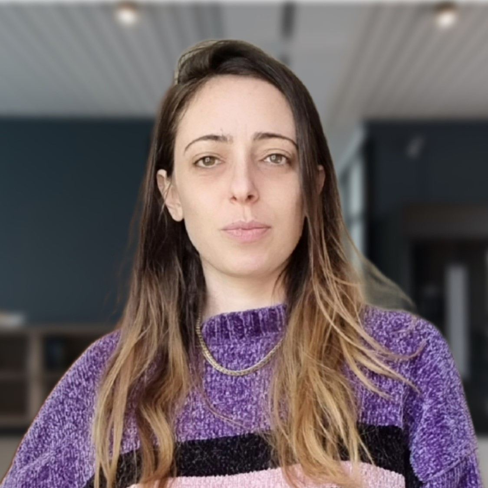

j-ISBA board members
Beatrice Franzolini. Section Chair
Beatrice is a Researcher at Bocconi University, in Italy. She is also part of the core faculty of the Bayesian Learning Lab at the Bocconi Institute for Data Science and Analytics (BIDSA), and a member of the Complex Data Modeling Research Network. Her main research interests include both methodological and applied aspects of Bayesian statistics, with a focus on clustering and random partitions, change-point detection and dynamic models, zero-inflated data, as well as biomedical and behavioral applications. Until July 2023, she was a Research Fellow at the Agency for Science, Technology and Research (A*STAR) and a member of the Division of Biomedical Data Science (BiDS), led by Prof. Maria De Iorio, at the National University of Singapore, in Singapore. She holds a PhD in Statistics from Bocconi University, Italy, obtained under the supervision of Prof. Antonio Lijoi and Prof. Igor Prünster. You can find out more about Beatrice at her webpage and twitter account.
Matteo Giordano. Section Chair-Elect
Matteo is an Assistant Professor of Statistics at the University of Turin, in Italy. He is also a Research Affiliate at Collegio Carlo Alberto, Turin, within the "de Castro" Statistics Initiative. His main research interests range across the theory and methodology of Bayesian procedures in complex high- and infinite-dimensional statistical models, with a focus on the frequentist analysis of Bayesian nonparametric procedures in inverse problems, diffusion models and point processes. Matteo obtained his Ph.D. in 2021 at the University of Cambridge, under the supervison of Prof. Richard Nickl. After that, he moved to the University of Oxford for a postdoc within Prof. Judith Rousseau's research group. You can find more about Matteo's work on his website.
Beniamino Hadj-Amar. Treasurer

Beniamino is a Postdoctoral Fellow at Rice University (Houston, TX) in the Department of Statistics, working with Marina Vannucci. He has obtained his Ph.D. in the Oxford-Warwick Statistics Programme (OxWaSP), under the supervision of Bärbel Finkenstädt (University of Warwick, UK). His main area of research is at the interface between statistics and science, where he is particularly interested in the development of Bayesian methodologies for the automated analysis of complex dynamical time series. Throughout his academic experience, he has been working on addressing scientific problems in several fields, such as respiratory research, circadian studies and neuroscience. From a methodological perspective, his research interests include switching models, change-point models, Bayesian nonparametrics, statistical spectral analysis, graphical models, and mixture models. You can find more about Beniamino at his webpage.
Filippo Ascolani. Program Chair
Filippo is currently a Lecturer at the Department of Statistical Science at Duke University and has received his PhD in Statistics from Bocconi University, under the supervision of Antonio Lijoi and Igor Prünster. He is also affiliated to BayesLab, a research unit of the Bocconi Institute for Data Science and Analytics (BIDSA), and to the “de Castro” Statistics Initiative at Collegio Carlo Alberto. Filippo's research interests regard mostly theoretical and computational aspects of Bayesian (parametric and nonparametric) models for dependent data. In particular, he tries to assess the impact of popular probabilistic structures (e.g. in hierarchical models) on posterior inference and computation. You can find out more about Filippo on his webpage.
Jordan Bryan. Secretary
Jordan is a Postdoctoral Trainee in the Department of Biostatistics at the University of North Carolina at Chapel Hill, working under the supervision of Dr. Didong Li and Dr. Haibo Zhou. He received his PhD in Statistics from Duke University, where he was advised by Peter Hoff. His research is organized around developing statistical methods for analyzing multivariate data, particularly those gathered in the natural sciences. You can find more about Jordan at his webpage.